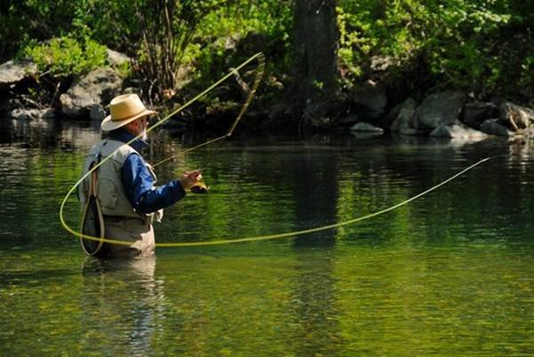

Ловля поплавочной удочкой
Самый первым из всех способов рыбалки возник метод ловли на поплавочную удочку. До сих пор этот вид остается самым популярным у начинающих рыбаков. Это объясняется простотой применяемой снасти и легкостью освоения техники ловли. Отличительная черта метода – использование в оснастке поплавка, который является сигнализатором поклевки. Ловля на поплавочную удочку может осуществляться как с берега, так и с лодки. Этот вид рыбной ловли может применяться для летней и для зимней рыбалки (через лунку во льду), различается лишь устройство снасти. Способ позволяет успешно удить любую мирную рыбу в реках и озерах: карася, карпа, плотву, уклейку, леща, подлещика, красноперку и других. Такая удочка универсальна, поэтому при правильно выбранной приманке можно поймать и хищника.
Ловля хищной рыбы
Хищная рыба предпочитает быстродвижущуюся приманку, этим обусловлены методы ее ловли. Так среди видов рыбной ловли хищника выделяют:
- спиннинг;
- джиг;
- нахлыст;
- сбирулино;
- троллинг;
- ловлю на жерлицу;
- на кружок;
- на рыболовную «резинку».
Троллинг
Троллинг – это ловля с движущегося плавсредства (моторной лодки или катера). Снасть для этого вида рыбалки должна быть очень прочной, необходимо, чтобы она могла выдерживать резкие рывки сильной рыбы. Удилища для троллинга изготавливают из крепких углекомпозитных или стекловолоконных материалов, оснащают мощными мультипликаторными катушками и крепким плетенным шнуром. Такая снасть устанавливается на корме лодки при помощи специальных держателей. Троллинг применяется при ловле пресноводных и морских хищников: щуки, сома, судака, форели, тунца, марлина. Если для рыбалки используют не моторную, а весельную лодку, то метод называют «ловлей на дорожку». Все необходимое для ловли троллингом можно выбрать в рыболовном интернет-магазине, обратите внимание, что в большинстве из них есть вариант оплаты при получении.